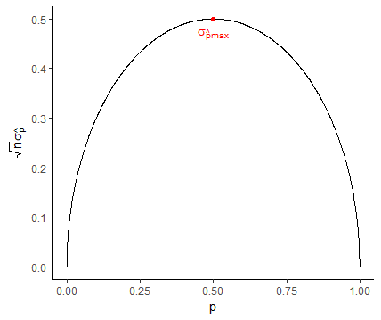

Estimación de Parámetros Poblacionales
Ejercicios Guía de TP
E7.1
El artículo Effects of Aggregates and Microfillers on the Flexural Properties of Concrete reseña un estudio de las propiedades de resistencia del concreto de alta resistencia obtenido usando superplastificantes y ciertos aglutinantes. La resistencia a la compresión de ese concreto se había investigado con anterioridad, pero no se conocía mucho acerca de la resistencia a la fricción (medida de la capacidad de resistencia a la falla por flexión). Los datos siguientes sobre resistencia a la presión, \(X\), están en megapascales, MPa, y aparecieron en el artículo citado:
\[\begin{split} (x_1, x_2, ..., x_n)& = (5.9,\,7.2,\,7.3,\,6.3,\,8.1,\,6.8,\,7.0,\,7.6,\,6.8,\,\\ & \quad \> \> \> 6.5,\,7.0,\,6.3,\,7.9,\,9.0,\,8.2,\,8.7,\,7.8,\,9.7,\,\\ & \quad \> \> \> 7.4,\,7.7,\,9.7,\,7.8,\,7.7,\,11.6,\,11.3,\,11.8,\,10.7)\end{split}\]
Calcular un estimador puntual de las siguientes magnitudes e indicar en cada caso que estimador se utilizó.
a) Valor medio de resistencia a la presión para la población de todas las vigas fabricadas de esta forma, \(\mu\).
Un estimador puntual de la media poblacional \(\mu\) es la media muestral \(\hat{\mu} = \overline{X}\):
\(\boxed{\hat{\mu} = \overline{X} \enspace \rightarrow \enspace \overline{x} = \frac{1}{n}\sum_{i=1}^{n}x_i = 8.1\text{MPa}}\)
b) Valor de la resistencia que separa al 50% más débil de las vigas del 50% más fuerte.
Un estimador puntual del segundo cuartil poblacional \(q_2\) es la mediana muestral \(\hat{q_2} = \tilde{X}\), y dado que \(n\) es impar, su valor viene dado por la observación central en la n-tupla ordenada, esto es:
\(\boxed{\hat{q_2} = \tilde{X} \enspace \rightarrow \enspace \tilde{x} = x_{(n+1)/2} = x_{14} = 7.7\text{MPa}}\)
c) Desviación típica estándar poblacional \(\sigma\).
Un estimador puntual del desvío típico poblacional \(\sigma\) es la dispersión estándar muestral \(\hat{\sigma} = S\), que para la muestra obtenida vale:
\(\boxed{\hat{\sigma} = S \enspace \rightarrow \enspace S = +\sqrt{\frac{1}{n-1}\sum_{n}(x_i - \overline{x})^2} = 1.7\text{MPa}}\)
d) Proporción de las vigas cuya resistencia a la flexión es mayor que \(10\text{MPa}\).
Al igual que en los casos anteriores, un estimador puntual para la proporción \(p\) de vigas con resistencia mayor a \(10\text{MPa}\) es la proporción muestral, definida como el número de vigas en la muestra con resistencia mayor a \(10\text{MPa}\), \(Y\) respecto del total, por lo que:
\(\boxed{\hat{p} = \frac{Y}{n} \enspace \rightarrow \enspace \frac{y}{n} = \frac{4}{27} = 0.1481}\)
e) Obtener la expresión del error estándar del estimador usado en el ítem a y calcular el error estándar estimado de dicho estimador.
Aplicando la definición de error estándar de un estimador, \(\sigma_{\hat{\theta}}\):
\(\boxed{\sigma_{\hat{\mu}} = \sigma_{\overline{X}} = +\sqrt{V(\overline{X})} = \frac{\sigma}{\sqrt{n}}}\)
Como se desconoce el valor de la desviación estándar poblacional \(\sigma\), puede obtenerse una estimación del error estándar del estimador, \(\hat{\sigma_{\hat{\theta}}}\), empleando un estimador del parámetro en cuestión, el cual ya se obtuvo en el punto c:
\(\boxed{\hat{\sigma_{\hat{\mu}}} = \frac{s}{\sqrt{n}} = 0.3194}\)
E7.2
Dos economistas estiman \(\hat{\mu}\) (el gasto promedio de las familias en una región determinada), con dos estimadores insesgados y estadísticamente independientes, \(\hat{\mu_1}\) y \(\hat{\mu_2}\). El segundo economista es menos cuidadoso que el primero, resultando que la desviación estándar de \(\hat{\mu_2}\) es el triple de la desviación estándar de \(\hat{\mu_1}\). Cuando se pregunta cómo combinar \(\hat{\mu_1}\) y \(\hat{\mu_2}\) para obtener un estimador global publicable, se hacen tres propuestas:
\(\hat{\mu_3} = \frac{1}{2}\hat{\mu_1} + \frac{1}{2}\hat{\mu_2}\): promedio simple
\(\hat{\mu_4} = \frac{3}{4}\hat{\mu_1} + \frac{1}{4}\hat{\mu_2}\): promedio ponderado
\(\hat{\mu_5} = 1\hat{\mu_1} + 0\hat{\mu_2}\): se descarta el estimador menos exacto
a) ¿Cuáles están insesgadas?
Un estimador es insesgado si su esperanza es igual al parámetro que busca estimar, esto es, \(E(\hat{\mu}) = \mu\). Al aplicar la esperanza a los estimadores 3 a 5, se obtiene:
\(E(\hat{\mu_3}) = E(\frac{1}{2}\hat{\mu_1} + \frac{1}{2}\hat{\mu_2}) = \frac{1}{2}E(\hat{\mu_1}) + \frac{1}{2}E(\hat{\mu_2}) = \frac{1}{2}\mu + \frac{1}{2}\mu = \mu\)
\(E(\hat{\mu_4}) = E(\frac{3}{4}\hat{\mu_1} + \frac{1}{4}\hat{\mu_2}) = \frac{3}{4}E(\hat{\mu_1}) + \frac{1}{4}E(\hat{\mu_2}) = \frac{3}{4}\mu + \frac{1}{4}\mu = \mu\)
\(E(\hat{\mu_5}) = E(1\hat{\mu_1} + 0\hat{\mu_2}) = E(\hat{\mu_1}) = \mu\)
\(\boxed{E(\hat{\mu_3}) = E(\hat{\mu_4}) = E(\hat{\mu_5}) = \mu \enspace \rightarrow \enspace \text{Todos los estimadores son insesgados}}\)
b) ¿Cuál es el mejor estimador? Justificar la respuesta con el cálculo adecuado.
El mejor estimador, es aquel que además de no tener sesgo (insesgado) es el más eficiente (varianza mínima).
\(V(\hat{\mu_3}) = V(\frac{1}{2}\hat{\mu_1} + \frac{1}{2}\hat{\mu_2}) = \frac{1}{4}V(\hat{\mu_1}) + \frac{1}{4}V(\hat{\mu_2}) = \frac{1}{4}V(\hat{\mu_1}) + \frac{9}{4}V(\hat{\mu_1}) = \frac{5}{2}V(\hat{\mu_1})\)
\(V(\hat{\mu_4}) = V(\frac{3}{4}\hat{\mu_1} + \frac{1}{4}\hat{\mu_2}) = \frac{9}{16}V(\hat{\mu_1}) + \frac{1}{16}V(\hat{\mu_2}) = \frac{9}{16}V(\hat{\mu_1}) + \frac{9}{16}V(\hat{\mu_1}) = \frac{9}{8}V(\hat{\mu_1})\)
\(V(\hat{\mu_5}) = V(1\hat{\mu_1} + 0\hat{\mu_2}) = V(\hat{\mu_1})\)
\(\boxed{min\{V(\hat{\mu_3}), V(\hat{\mu_4}), V(\hat{\mu_5})\} = V(\hat{\mu_5}) \enspace \rightarrow \enspace \hat\mu_5 \enspace \text{es el mejor estimador}}\)
c) Proponer un mejor resultado de la forma \(\hat\mu_6 = a\hat\mu_1 + b\hat\mu_2\) (insesgado y de varianza mínima).
Lo que se pide es hallar el valor de los coeficientes \((a, b)\) de forma tal que \(\hat\mu_6\) sea insesgado y eficiente. Para ello, las ecuaciones a resolver son:
\(E(\hat\mu_6) = E(a\hat\mu_1 + b\hat\mu_2) = aE(\hat\mu_1) + bE(\hat\mu_2) = \mu \enspace \rightarrow \enspace a + b = 1\)
\(V(\hat\mu_6) = V(a\hat\mu_1 + b\hat\mu_2) = a^2V(\hat\mu_1) + b^2V(\hat\mu_2) = a^2V(\hat\mu_1) + 9b^2V(\hat\mu_1) \enspace \rightarrow \enspace 0 < a^2 + 9b^2 < 1\)
Operamos sobre la ecuación cuadrática para dejarla expresada en términos de \(a\) y hallar el valor de \((a, b)\):
\(a^2 + 9b^2 = a^2 + 9(1 - a)^2 = a^2 + 9 - 18a + 9a^2 = 10a^2 - 18a + 9\)
\(\frac{\partial}{\partial{a}}(10a^2 - 18a + 9) = 0 \enspace \rightarrow \enspace 20a - 18 = 0 \enspace \rightarrow \enspace a = \frac{9}{10} \enspace \rightarrow \enspace b = \frac{1}{10}\)
Por lo que:
\(\boxed{\hat\mu_6 = \frac{9}{10}\hat\mu_1 + \frac{1}{10}\hat\mu_2}\)
E7.3
El verdadero promedio de crecimiento \(\mu\) de un tipo de planta, durante un período de un año, es idéntico al de un segundo tipo, pero la varianza de crecimiento para el primer tipo es \(\sigma^2\), mientras que para el segundo tipo es \(4\sigma^2\). Sean \(X_1, X_2, ..., X_n\) las \(n\) observaciones independientes de crecimiento en el primer tipo −entonces \(E(X) = μ\) y \(V(X) = \sigma^2\)−, y sean \(Y_1, Y_2, ..., Y_m\) las \(m\) observaciones independientes de crecimiento en el segundo tipo −\(E(Y) = μ\) y \(V(Y) = 4\sigma^2\).
a) Demostrar que para cualquier \(\delta\) entre 0 y 1, el estimador \(\hat{\mu} = \delta\overline{X} + (1 - \delta)\overline{Y}\) es insesgado para \(\mu\).
Un estimador es insesgado cuando su valor esperado coincide con el parámetro a estimar:
\(\boxed{E(\hat{\mu}) = E[\delta\overline{X} + (1 - \delta)\overline{Y}] = \delta E(\overline{X}) + (1 - \delta)E(\overline{Y}) = (\delta + 1 - \delta)\mu = \mu \enspace \rightarrow \enspace \hat{\mu} \enspace \text{es insesgado}}\)
b) Para \(n\) y \(m\) fijos, calcular \(V(\hat{\mu})\) y encontrar el valor de \(\delta\) que reduzca dicha varianza al mínimo.
Considerando que las variables aleatorias \(\overline{X}\) y \(\overline{Y}\) son independientes, su covarianza es cero por lo que:
\(V(\hat{\mu}) = V[\delta\overline{X} + (1 - \delta)\overline{Y}] = \delta^2V(\overline{X}) + (1 - \delta)^2V(\overline{Y}) = \delta^2\frac{\sigma^2}{n} + 4(1 - \delta)^2\frac{\sigma^2}{m}\)
Para encontrar el valor de \(\delta\) que reduzca dicha varianza al mínimo:
\(\boxed{\frac{\partial{V(\hat{\mu})}}{\partial{\delta}} = 0 \enspace \rightarrow \enspace \frac{2\delta\sigma^2}{n} - \frac{8(1 - \delta)\sigma^2}{m} = 0 \enspace \rightarrow \enspace \delta = \frac{n}{\frac{m}{4}+n}}\)
E7.4
Sea \(X\) una variable aleatoria binomial con parámetros \(n\) y \(p\).
a) Demostrar que la proporción muestral \(\hat{p}=\frac{X}{n}\) es un estimador insesgado de \(p\).
Recordando que un estimador es insesgado si su valor esperado coincide con el parámetro a estimar, esto es \(E(\hat{\theta})=\theta\), y sabiendo que el valor esperado de la variable \(X \sim Bin(n, p)\) es \(E(X) = np\), podemos plantear:
\(\boxed{E(\hat{p}) = E(\frac{X}{n}) = \frac{1}{n}E(X) = p \enspace \rightarrow \enspace \hat{p} \enspace \text{es insesgado}}\)
b) Demostrar que el error estándar es \(\sigma_{\hat{p}} = \sqrt{\frac{p(1-p)}{n}}\), y que nunca supera el valor \(\sqrt{\frac{1}{4n}}\).
El error estándar de un estimador \(\hat\theta\) es su desvío estándar, \(\sigma_{\hat\theta} = \sqrt{V(\hat\theta)}\), y sabiendo que la varianza de la variable \(X \sim Bin(n, p)\) es \(V(X) = np(1 - p)\), podemos escribir:
\(\boxed{V(\hat{p}) = V(\frac{X}{n}) = \frac{1}{n^2}V(X) = \frac{p(1 - p)}{n} \enspace \rightarrow \enspace \sigma_{\hat{p}} = \sqrt{\frac{p(1 - p)}{n}}}\)
Para encontrar el máximo del error estándar, derivamos la expresión anterior:
\(\frac{\partial\sigma_\hat{p}}{\partial{p}} = 0 \enspace \rightarrow \enspace \frac{1}{2\sqrt{n}}(p - p^2)(1 - 2p) = \frac{1}{2\sqrt{n}}p(2p^2 - 3p + 1) = 0 \enspace \rightarrow \enspace p \in \{0, \frac{1}{2},1\}\)
Para \(p = 0\) y \(p = 1\) el error es mínimo (cero), por lo que el máximo valor del error estándar viene dado cuando \(p = \frac{1}{2}\):
\(\boxed{\sigma_{\hat{p}max}: p = \frac{1}{2} \enspace \rightarrow \enspace \sigma_{\hat{p}max} = \sqrt{\frac{1}{4n}}}\)
Este resultado puede apreciarse en el siguiente gráfico:

Figura 1: Error estándar del estimador en función del parámetro \(p\)
c) Un fabricante de automóviles ha desarrollado un nuevo tipo de defensas, las cuales absorben impactos con menos averías que las defensas anteriores. El fabricante ha utilizado esta defensa en una secuencia de 25 choques controlados contra un muro, cada uno a 16 kilómetros por hora, usando uno de sus modelos compactos. Sea \(X\) el número de choques que resultan sin daño visible al automóvil, y el valor observado \(x = 15\). Estimar la proporción \(p\) de todos los choques que resultan sin daño, equivalente a \(p = P(\text{sin daño en un solo choque})\), y calcular el error estimado.
Empleando algunas definiciones de los puntos anteriores, podemos obtener lo pedido planteando:
\(\boxed{\hat{p} = \frac{X}{n} \enspace \rightarrow \enspace \frac{x}{n} = \frac{15}{25} \enspace \rightarrow \hat{p} = 0.6}\)
\(\boxed{\hat\sigma_{\hat{p}} = \sqrt{\frac{\hat{p}(1 - \hat{p})}{n}} \enspace \rightarrow \enspace \hat\sigma_{\hat{p}} = 0.098}\)